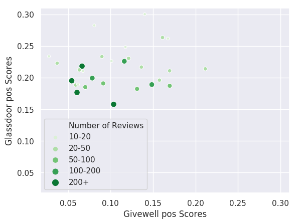
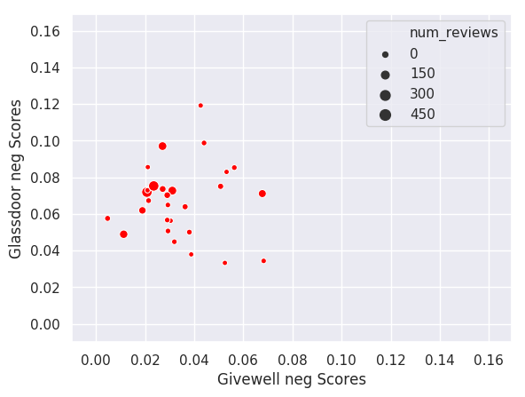

The Scrapers
This website summarizes our results.
Does the information from Givewell and Glassdoor reviews tell the same story?
Short answer: They don't seem to.
We analyzed if the sentiments of the pooled Glassdoor reviews and the Givewell review were correlated. The graphs and the table below summarizes our results. Each axis indicates the proportion of sentences with a certain sentiment -- positive or negative, according to the graph. For the proportion of positive sentences graph, the y axis represents the rate of sentences with a positive sentiment in the pooled Glassdoor review and the x axis represents the rate of sentences with a positive sentiment in the Givewell review. The proportion of negative sentences graph has a similar interpretation, but for the rates of sentences with negative sentiment.
Rate of sentences with positive sentiment
Rate of sentences with negative sentences
We also constructed a sentiment compound score which can be interpreted as a measurement of the general sentiments in a given text. It ranges from -1 to +1, where a value below zero indicates the text has a stronger negative than positive sentiment.
Rate of sentences with positive sentiment
The graphs don't show a clear correlation between the sentiments of the reviews from both sources. More interestingly, after getting the correlations we can see they are not statiscally significant. Even though our very small sample (29 organizations) might be affecting significance here, the correlation between the percentage of negative sentences is very close to zero.
Correlations
Rate of sentences with positive sentiment
0.17
Rate of sentences with negative sentiment
0.01
Compound score
0.01
None of them is statistically different than zero.
Which organizations have the biggest review discrepancies?
We also analyzed the discrepancies between the pooled Glassdoor reviews and the Givewell review. Then, we got the difference between those three indicators from the pooled Glassdoor reviews and from the Givewell review, for each organization.
The graphs below summarizes such results by organization. A positive score indicates that the pooled Glassdoor reviews produce a higher result than the Givewell review.